STEP 01
‘이 PC 자동 준비’ 선택
데이터베이스 연결 창에서 이 PC 자동 준비(권장)를 고르고 자동 준비를 누릅니다.
기억하세요 DB 위치·포트·사용자·비밀번호는 입력하지 않습니다.
✚ 데이터베이스 연결 — □ ×
데이터베이스 연결
이 PC에 새 자료 저장소를 만듭니다.
이 PC 자동 준비 (권장)⌄
프로그램에 포함된 PostgreSQL로 DB까지 자동 준비합니다.
FIRST RUN GUIDE · 메인 PC용
별도의 DB 설치 파일도, 복잡한 암호 설정도 필요 없습니다. Microsoft Store에서 설치한 뒤 화면의 안내를 따라가면 헌금관리가 이 PC를 자동으로 준비합니다.
4 STEPS
일반적인 신규 메인 PC라면 고급 DB 정보를 알 필요가 없습니다.
승인된 Microsoft 계정으로 비공개 Store 링크를 열고 헌금관리를 설치합니다.
프로그램에 포함된 PostgreSQL과 헌금 자료 저장소를 자동으로 준비합니다.
공통 초기 암호 대신 설치자가 직접 관리자 아이디와 암호를 정합니다.
방금 만든 계정으로 로그인하고 대시보드, Web 접속, 최초 백업을 확인합니다.
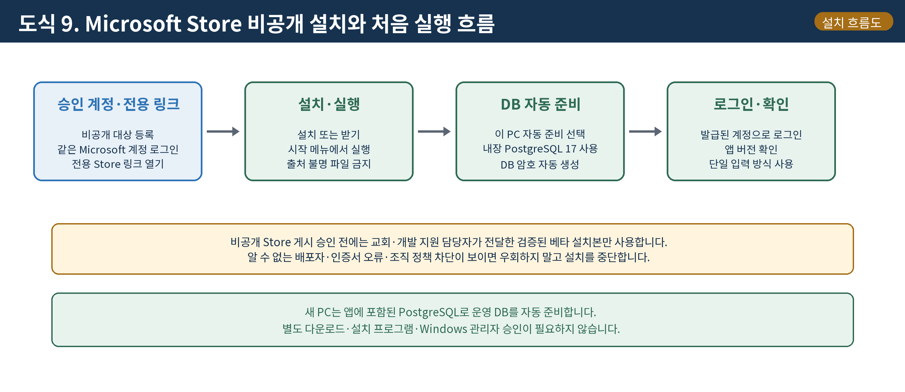
SCREEN GUIDE
클릭해야 할 버튼과 확인해야 할 문구를 화면별로 정리했습니다.
데이터베이스 연결 창에서 이 PC 자동 준비(권장)를 고르고 자동 준비를 누릅니다.
이 PC에 새 자료 저장소를 만듭니다.
자료 폴더, PostgreSQL, 헌금관리 DB와 안전한 연결 계정을 순서대로 준비합니다.
헌금관리 전용 DB와 안전한 연결 계정을
준비하는 중입니다...
아이디는 3자 이상, 암호는 10자 이상으로 정합니다. 이 계정이 설치 후 첫 로그인 계정입니다.
이 데이터베이스를 관리할 계정을 만듭니다.
DAILY QUICK GUIDE
관리자가 예배를 열고, 계수원이 입력하고, 차액을 확인한 뒤 마감·보고하는 핵심 4단계입니다.
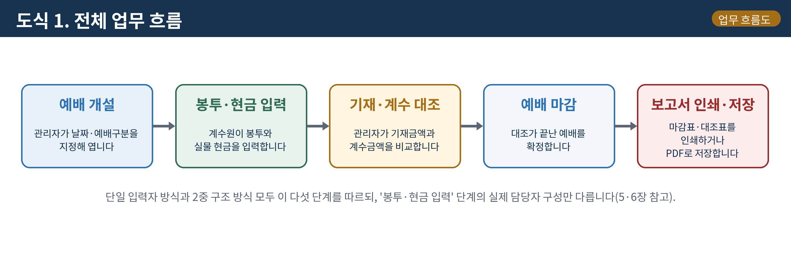
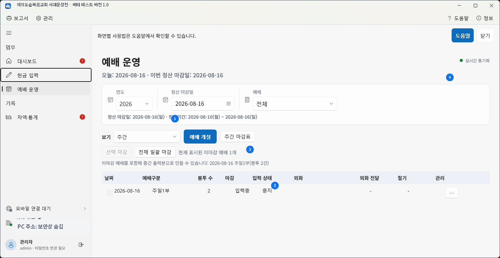
01관리자
같은 날짜와 예배구분을 중복 개설하지 마세요.
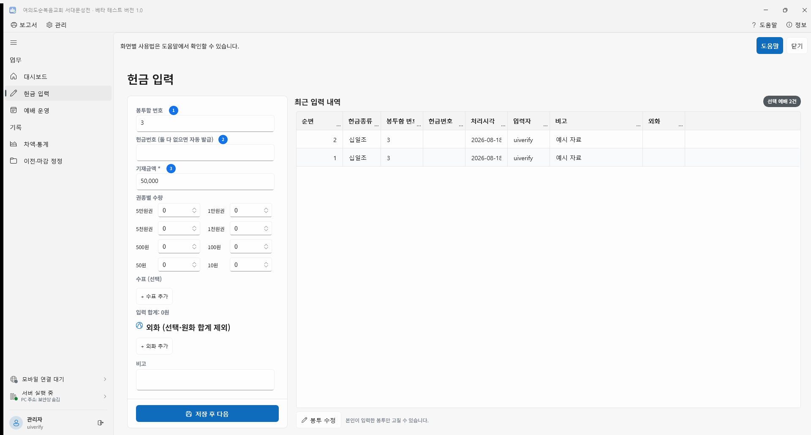
02관리자 · 계수원
다음 봉투로 넘어가기 전 저장 안내와 최근 입력을 확인하세요.
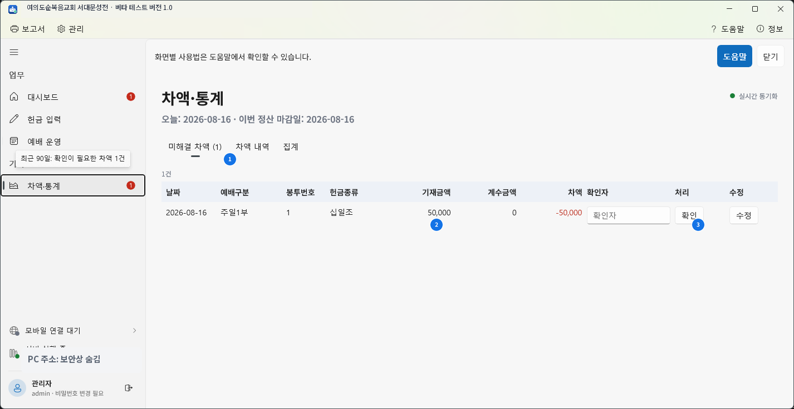
03관리자
마감은 추가 저장과 수정을 막는 확정 작업입니다.
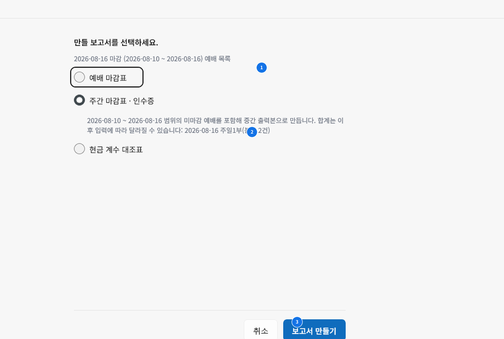
04관리자
보고서를 저장한 뒤 그날 자료를 백업하세요.
MOBILE QUICK GUIDE
별도 스토어 앱을 받지 않고 같은 Wi-Fi에서 브라우저로 접속합니다. 스마트기기는 계수원 전용이며 예배 개설·마감·계정 관리는 PC에서 합니다.
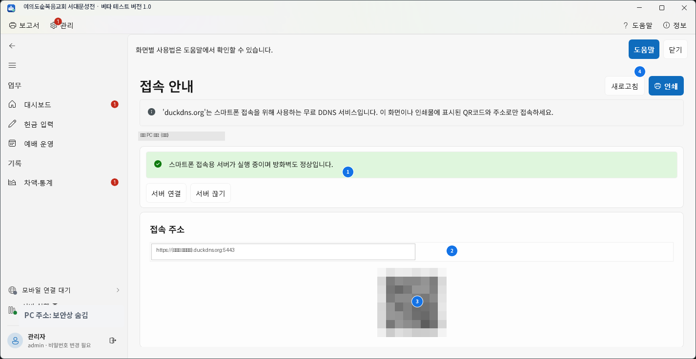
관리 › 접속 안내에서 서버·방화벽 정상 상태와 현재 QR 코드를 확인합니다.
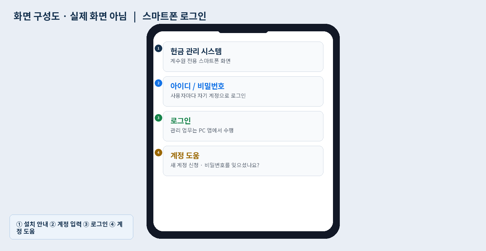
PC와 같은 Wi-Fi에 연결하고 각자의 계수원 아이디·비밀번호로 로그인합니다.
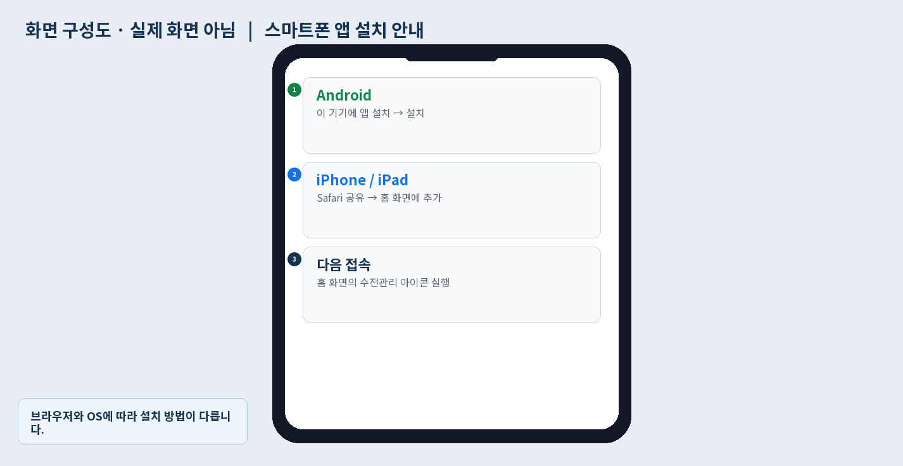
Android Chrome은 이 기기에 앱 설치, iPhone·iPad는 Safari의 공유 › 홈 화면에 추가를 사용합니다.
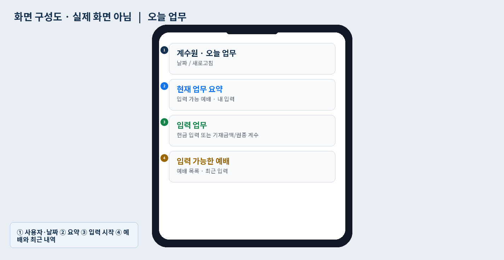
현재 사용자·날짜·진행 중인 예배를 확인한 뒤 대상 예배를 골라 헌금을 입력합니다.
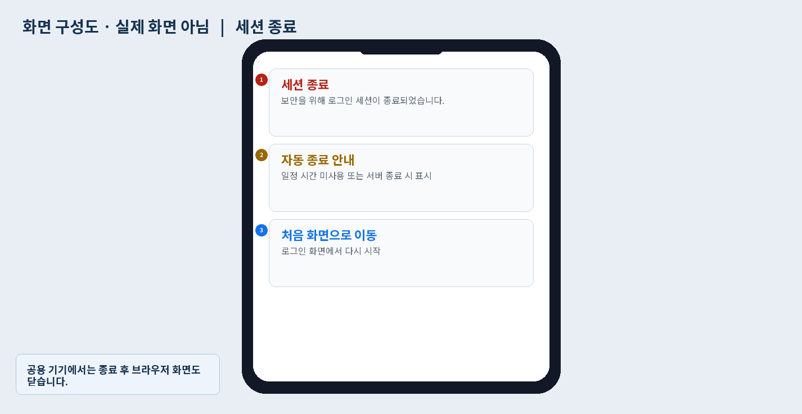
최근 입력에서 마지막 저장을 확인하고, 공용 기기는 반드시 로그아웃한 뒤 브라우저를 닫습니다.
REFERENCE
매뉴얼에 수록된 실제 연결·로그인 화면입니다.
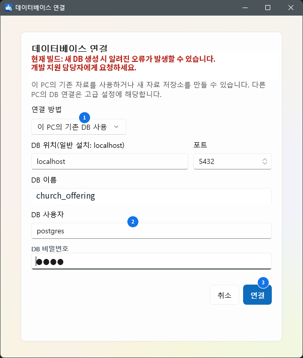
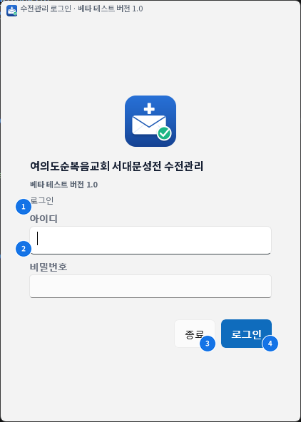
WHAT HAPPENS INSIDE
DB 암호는 PC마다 다르게 자동 생성하고 Windows 자격 증명 관리자에 보관합니다. 기존 자료가 발견되면 자동으로 덮어쓰거나 삭제하지 않습니다.
사용자의 LocalAppData 영역에 DB 자료를 보관합니다.
평상시에는 PostgreSQL 최고관리자로 연결하지 않습니다.
새로 만들다 실패한 DB는 가능한 범위에서 정리하고 기존 DB는 보호합니다.
FINAL CHECK
이 확인까지 끝나야 메인 PC의 최초 설치가 완료됩니다.
EXISTING DATA
‘이 PC 자동 준비’를 반복하지 말고 설치 담당자와 함께 고급 연결 또는 백업 복원을 사용하세요.
이미 준비된 헌금관리 DB에 연결
새 DB에 정식 PostgreSQL 백업을 복원